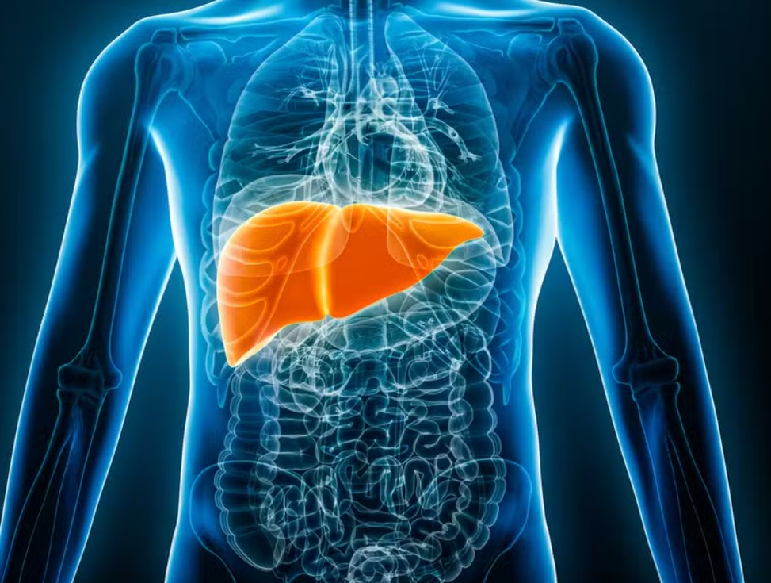

ü´Ä PARTES DO CORPO HUMANO ü߆
üìö Como jogar: Arraste o nome de cada √≥rgão para o local correto no corpo humano!
0
✅ ACERTOS
10
üìã TOTAL
10
⏳ RESTANTES
Complete com os nomes dos órgãos:
1.
2.
3.
4.
5.
6.
7.
8.
9.
10.
Arraste os órgãos:
FÍGADO
BEXIGA
CÉREBRO
INTESTINO DELGADO
CORAÇÃO
RIM
PULMÃO
ESTÔMAGO
TRAQUÉIA
INTESTINO GROSSO
üìö CONHE√áA OS √ìRG√ÉOS
Clique em cada card para descobrir curiosidades incríveis!
CÉREBRO
Centro de comando do corpo
TRAQUÉIA
Tubo que leva ar aos pulmões
PULMÃO
Responsável pela respiração
CORAÇÃO
Bomba que circula o sangue

FÍGADO
Filtro e fábrica do corpo
ESTÔMAGO
Onde a comida é digerida
RIM
Filtro natural do sangue
INTESTINO GROSSO
Absorve água dos alimentos
INTESTINO DELGADO
Absorve nutrientes
BEXIGA
Armazena a urina